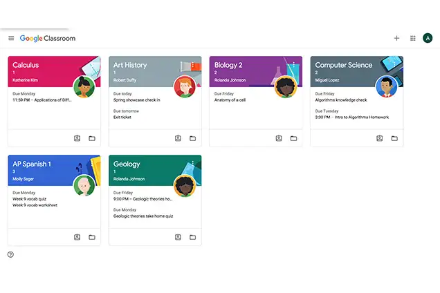

مقرر: تطبيقات الانترنت والمنصات الالكترونية
اعداد الطالبة: دنيا محمد عثمان محمد جاد هلال
الرقم الجامعي: 2502319
التاريخ: اكتوبر 2026
شهدت العملية التعليمية تطورا كبيرا مع المنصات الالكترونية، ومن أبرزها Google Classroom التي أطلقتها Google عام 2014 كأداة مجانية لادارة الفصول الدراسيه الالكترونيه.
أصبحت هذه المنصة جزءا اساسيا من التعليم في المدارس والجامعات، خاصه بعد جائحه كرونا التي فرضت التحول نحو التعليم عن بعد.
1_ تسهيل التواصل: توفر قناة اتصال مباشرة بين المعلم والطلاب في أي وقت.
2_ تنظيم العملية التعليمية: تنظيم الواجبات والمواعيد والمواد في مكان واحد.
3_ توفير الوقت: إلغاء الحاجة للطباعة الورقية وتوزيع الأوراق يدوياً.
4_ دعم التعلم التفاعلي: مشاركة في المناقشات والتعاون في المشاريع.
5_ التكامل مع أدوات Google: تعمل مع Docs و Drive و Meet و Forms.
تعتمد على نظام "الفصول الافتراضية"، حيث ينشئ المعلم فصلاً رقمياً ويدعو الطلاب عبر رمز فريد (Class Code).
1_ إنشاء الفصل: ينشئ المعلم فصلاً جديداً ويحدد اسمه والوصف.
2_ دعوة الطلاب: مشاركة رمز الدعوة عبر البريد أو عرضه على الشاشة.
3_ نشر المحتوى: نشر المحاضرات والملفات والروابط في تبويب Classwork.
4_ إدارة الواجبات: إنشاء واجبات مع تحديد تاريخ التسليم والدرجة.
5_ التقييم: تصحيح الواجبات وإضافة تعليقات وإرجاعها للطلاب.
1_ التعليم عن بُعد: الأداة الأساسية للدراسة عن بُعد في الجامعات والمدارس.
2_ الواجبات والاختبارات: إنشاء واجبات واختبارات عبر Google Forms.
3_ المشاريع الجماعية: العمل المشترك على مستندات Google Docs.
4_ التواصل مع أولياء الأمور: متابعة تقدم الأبناء عبر Guardian Summaries.
الصورة التالية توضح واجهة منصة Google Classroom:

| وجه المقارنة | Google Classroom | Microsoft Teams | Moodle |
|---|---|---|---|
| الشركة المطورة | Microsoft | Moodle HQ | |
| السعر | مجاني | مدفوع/مجاني محدود | مجاني (مفتوح المصدر) |
| سهولة الاستخدام | سهل جداً | متوسط | يحتاج تدريب |
| التكامل | أدوات Google | أدوات Microsoft | إضافات متعددة |
| الاستخدام | مدارس وجامعات | شركات وتعليم | جامعات بشكل أساسي |